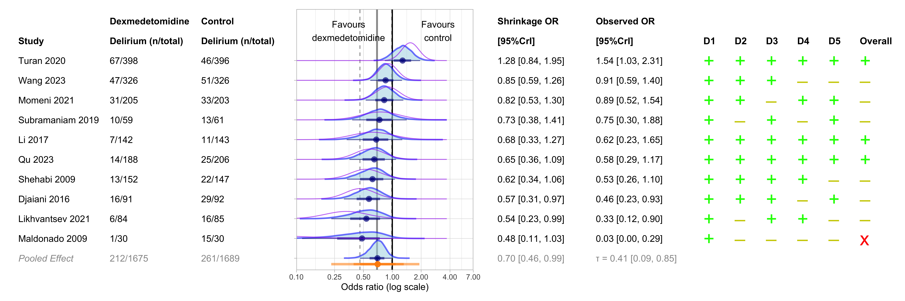
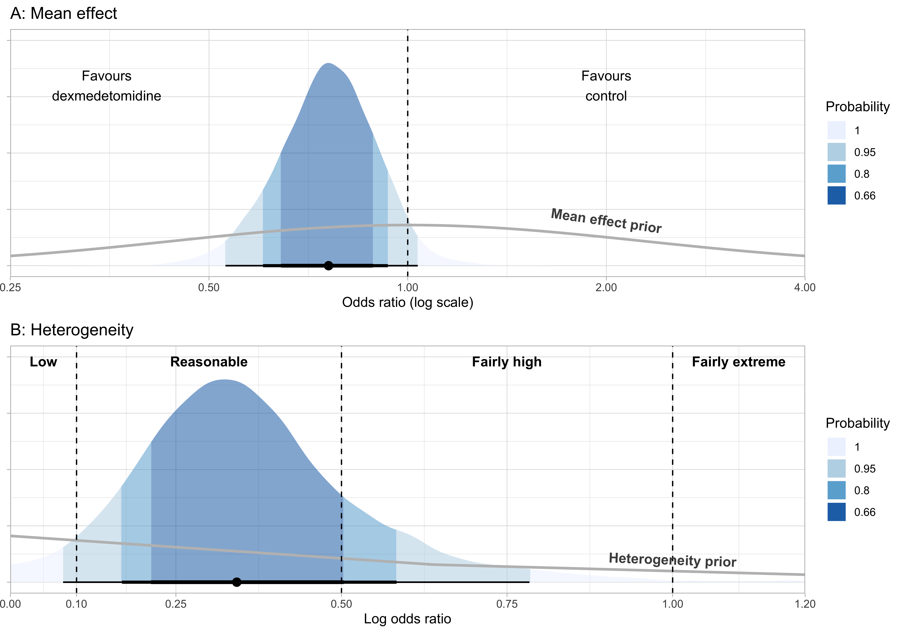
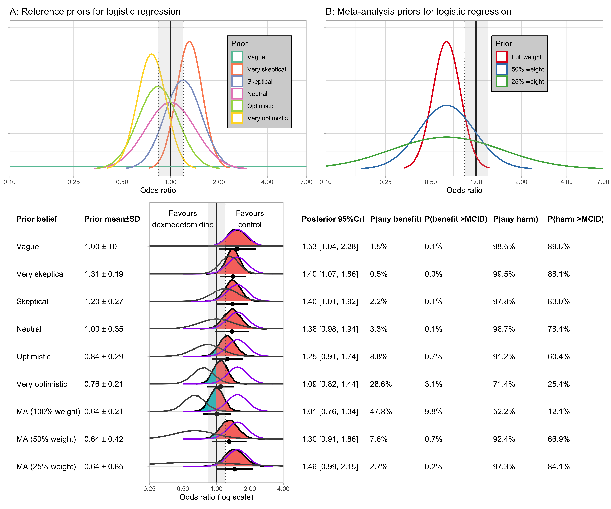
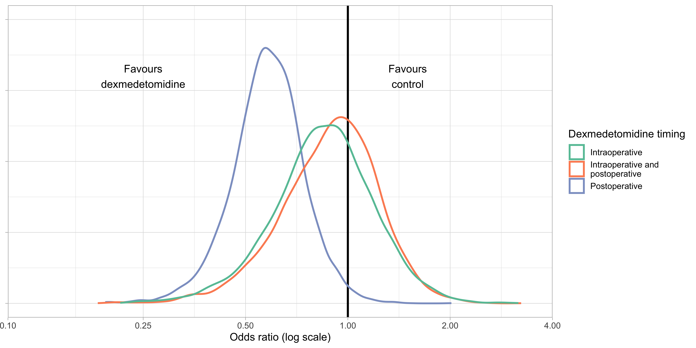
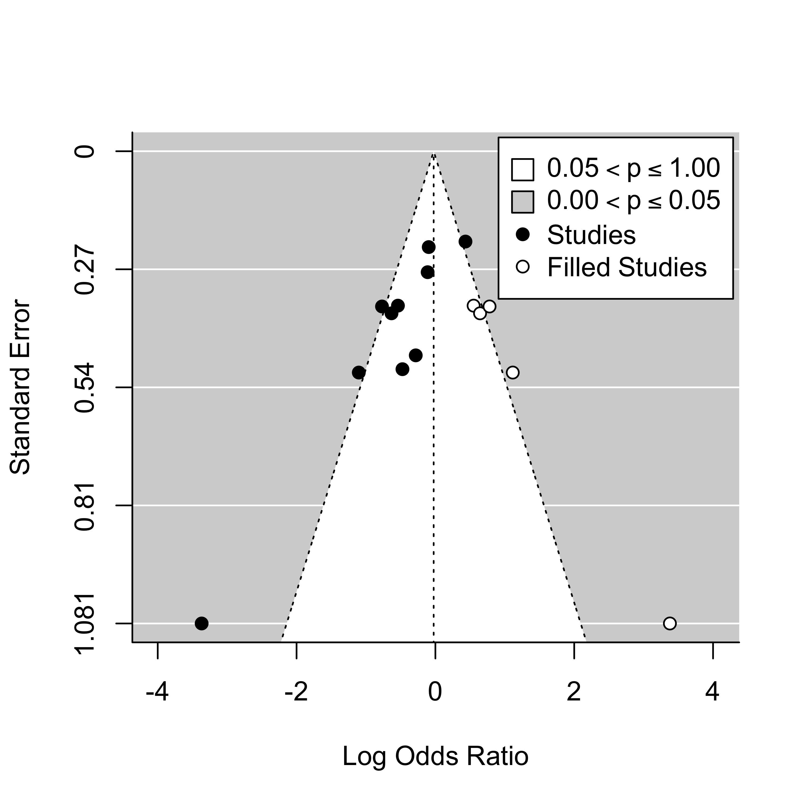
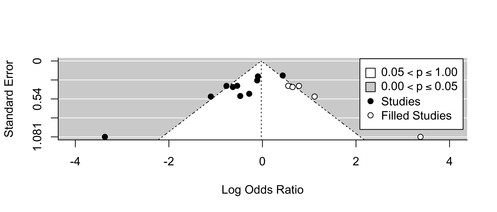
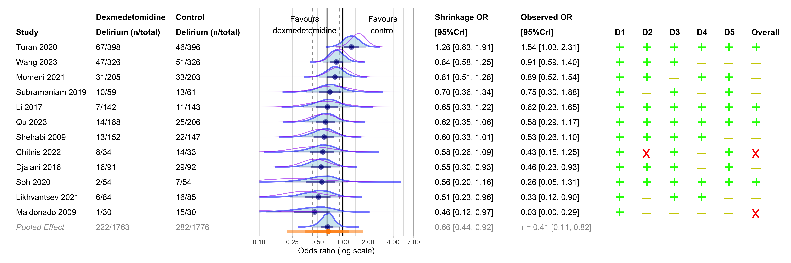

Dexmedetomidine in cardiac surgery meta-analysis
1 Changes this version
- Added in a section about calculating the ‘variance explained’ in Table 9.
- Change the ATE plots a bit - I’ve put in point intervals rather than lots of distribution curves in the bottom panel.
- Added a secondary analysis (including studies that were registered after enrollment).
2 Introduction
Before diving into this I would read Kruschke and Liddell if you’re not across the whole frequentist vs. Bayesian debate.
3 Overall forest plot
Below in Figure 3 and Figure 4 I show the forest plot of all studies, and excluding studies at high risk of bias, respectively.
For meta-analysis, we will employ a Bayesian normal-normal hierarchical model (NNHM). It is a ‘normal-normal’ model because we assume on the first level that the within-study effects of each trial are normally distributed, and on the second level that the effects across different populations are normally distributed.
Firstly - let’s discuss the within-study normality assumption. In the NNHM we assume that each study’s observed effect \(\hat{\theta}\) is an estimate of the true effect in that trial population \({\theta}\), and the uncertainty in this estimate is modeled with a normal distribution with mean \({\theta}\) and standard deviation \({\sigma}\):
\[ \hat{\theta} \sim Normal({\theta}, {\sigma}^2) \] In the above case, the standard deviation \(\sigma\) is the trial’s standard error. As such, estimates from studies with smaller standard errors will have narrower normal distributions and deviate less from the estimated mean effect \(\theta\). The purple lines in the forest plot below show the assumed distribution of within study effects described above.
Secondly - let’s discuss the between-population normality assumption. Here, we assume that each study’s estimate \(\theta\) is an approximation of the overall mean effect across different populations, \(\mu\). We assume that this normal distribution with mean \(\mu\) has a standard deviation \(\tau\). So, the second level of our NNHM takes the form:
\[ \theta \sim Normal(\mu, \tau^2) \]
In a Bayesian analysis, we know \(\theta\) using our estimate \(\hat{\theta}\), and we assume that \(\sigma\) is known (for which use the study’s standard error). We need to put priors on both of these \(\mu\) and \(\tau\) parameters. For our primary analysis, I have used weakly informative priors. That is, they are meant to impart some information about prior belief of the plausible range of true values, without overwhelming the data.
For \(\mu\), the prior is a normal distribution with mean 0 and standard deviation 0.82 (on the log odds ratio scale):
\[ \mu \sim Normal(0, 0.82) \]
This is a weakly informative prior because it makes values closer to null (logOR = 0) more likely but still leaves room for higher and lower values. With this prior, 95% of the density lies between an odds ratio of 0.2 and 5. This is consistent with logic, and prior evidence: we consider it unlikely that dexmedetomidine is a silver bullet for delirium (80% or greater odds reduction) or a significant driver of delirium (500% or greater odds increase).
Below in Figure 1, I graph the prior on both the logOR (A) and OR scale (B), to visualise the prior distribution. As you can see, for the distribution to be normal on the odds ratio scale, we need to take the logarithm of the x-axis (C).
For \(\tau\), the prior is a half-Cauchy distribution with scale = 0.5:
\[ \tau \sim HalfCauchy(0.5) \]
We use a half-Cauchy distribution because this is a heavy tailed distribution that only takes positive values (as we only look at ‘half’), which is appropriate for a standard deviation parameter. The ‘scale’ in a half-Cauchy distribution can be thought of as similar to a standard deviation, as it relates to the gradient of the slope (this isn’t technically true because the Cauchy distribution has undefined mean and variance, but is okay for purposes of understanding).
We can show our \(\tau \sim HalfCauchy(0.5)\) prior grapically. Somewhat arbitrarily, traditional cutoffs for heterogeneity are: Low (\(\tau < 0.1\)), reasonable (\(0.1 < \tau < 0.5\)), fairly high (\(0.5 < \tau < 1.0\)), and fairly extreme (\(\tau > 1.0\)). We can present the prior probabilities of each level of heterogeneity graphically, as shown in Figure 2 below.
As you’ll notice, the distribution is heavy-tailed, and as such we leave a high probability for significant heterogeneity. This is consistent with our belief that there is likely quite significant heterogeneity in the response to dexmedetomidine among different populations.
Finally, we will conduct metaregression further below, with more details provided. Nonetheless I will show the priors for the regression coefficient here, for completeness. For the regression coefficient we will use the same priors as we use for the intercept above: \(\beta \sim Normal(0, 0.82)\)
Putting all these together, we can show the following formulas for our NNHM:
\[\hat{\theta} \sim Normal(\theta, \sigma^2)\] \[\theta \sim Normal(\mu, \tau^2)\] \[\mu \sim Normal(0,0.82)\] \[\tau \sim HalfCauchy(0.5)\] \[\beta \sim Normal(0,0.82)\]
Now for the forest plot.
Firstly, the blue curves show the posterior shrinkage estimates of each study; that is, each study’s effect is ‘shrunk’ towards the mean when viewed in light of the other data. Kruschke and Liddell explain this best:
“Hierarchical models are especially useful because the low-level and high-level parameters are estimated simultaneously and are mutually constraining. When data from many low-level units inform the high-level distribution, the high-level distribution constrains the low-level parameters to be mutually consistent. This causes the more extreme low-level cases to be”shrunken” toward the mode(s) of the group. Shrinkage helps prevent false alarms caused by random conspiracies of rogue outlying data. Essentially, the data from the other individuals are acting as simultaneous prior information to rein in estimates of outlying individuals.”
The orange line shows the 95%CrI for the prediction interval: the range of values that would be likely to be observed be a future study of this research question. Note this is different to the credible interval, which is the range of plausible values for the mean effect size. Prediction intervals are perhaps the best summary of heterogeneity because they provide a practical interpretation: what is the range of plausible values I might observe in different patient populations?
On the right hand side we have the risk of bias assessments for each study: the five domains, and the overall assessment. ‘+’ indicates ‘Low risk’, ‘-’ indicates ‘Some concerns’, and ‘x’ indicates ‘High risk’.


4 Posterior probability plots
Now let’s look at the posteriors a bit more closely. We are essentially zooming in on the ‘Pooled Effect’ curves from the above forest plots.
For ùõï, I present dotted lines to represent traditional cutoffs for heterogeneity: Low (ùõï < 0.1), reasonable (0.1 < ùõï < 0.5), fairly high (0.5 < ùõï < 1.0), and farily extreme (ùõï > 1.0).
I also present our primary priors for ùùÅ and ùõï, \(N(0, 0.82)\) and \(HalfCauchy(0.5)\), respectively.
Figure 5 shows the curves, with tabs for all studies and excluding studies at high risk of bias.


5 Probability of benefit calculations
Now to calculate the probability of dexmedetomidine having certain effect sizes. In order to do this we need to transform the odds ratio into an interpretable effect size: the absolute risk reduction (ARR), or risk difference.
To go from the OR ➜ ARR, you must first use the OR to calculate the risk in the treatment group (Rt), as shown in Equation 1.
\[ R_t = \frac{R_c \times OR}{R_c(OR - 1) + 1} \tag{1}\]
Where Rt is the risk in the treatment group and Rc is the risk in the control group. For Rc, we use the median control group rate across all studies, with a different median rate for each subgroup.
Then, we can calculate the risk difference (Rd) in Equation 2:
\[ R_d = R_t - R_c \tag{2}\]
The typical workflow is all well and good but we can’t use it for our purposes. What we need is to calculate the required odds ratio for a given ARR and then estimate the probability of our data suggesting the odds ratio is greater or lower than that value.
So we rearrange Equation 1 to obtain Equation 3:
\[ OR = \frac{R_t(R_c - 1)}{R_c(R_t - 1))} \tag{3}\]
We are able to calculate Rt in the equation above using Equation 4:
\[ R_t = R_c - R_d \tag{4}\]
These calculations are shown below in Table 1 and Table 2, with tabs for all studies and excluding studies at high risk of bias.
| Median control group rate (%) | Probability of any benefit (%) | Probability of ARR = 2 (%) | Probability of ARR = 4 (%) | Probability of ARR = 6 (%) | Probability of ARR = 8 (%) | |
|---|---|---|---|---|---|---|
| Overall | ||||||
| Overall | 16.0 | 97.9 | 87.7 | 54.5 | 17.5 | 2.3 |
| Age | ||||||
| Age below 60 | 15.6 | 96.6 | 44.3 | 22.0 | 6.8 | 1.2 |
| Age above 60 | 17.2 | 80.6 | 22.0 | 14.1 | 7.8 | 3.8 |
| Dose | ||||||
| High dose | 18.8 | 94.5 | 51.8 | 38.4 | 24.6 | 12.4 |
| Low dose | 15.6 | 93.4 | 24.5 | 11.8 | 4.5 | 1.1 |
| Dose timing | ||||||
| Intraoperative | 15.6 | 69.6 | 18.6 | 10.8 | 5.1 | 1.8 |
| Intraoperative + postoperative | 11.6 | 63.0 | 18.1 | 7.6 | 1.9 | 0.2 |
| Postoperative | 18.8 | 98.7 | 55.7 | 37.3 | 19.8 | 8.4 |
| Median control group rate (%) | Probability of any benefit (%) | Probability of ARR = 2 (%) | Probability of ARR = 4 (%) | Probability of ARR = 6 (%) | Probability of ARR = 8 (%) | |
|---|---|---|---|---|---|---|
| Overall | ||||||
| Overall | 15.6 | 96.0 | 76.3 | 34.4 | 6.5 | 0.3 |
| Age | ||||||
| Age below 60 | 15.6 | 98.5 | 43.1 | 18.6 | 4.2 | 0.4 |
| Age above 60 | 15.6 | 53.6 | 5.1 | 2.0 | 0.5 | 0.0 |
| Dose | ||||||
| High dose | 18.8 | 95.4 | 50.5 | 36.1 | 21.9 | 10.7 |
| Low dose | 15.3 | 84.2 | 8.6 | 2.8 | 0.7 | 0.1 |
| Dose timing | ||||||
| Intraoperative | 15.6 | 66.9 | 14.5 | 7.1 | 2.8 | 0.9 |
| Intraoperative + postoperative | 11.6 | 59.7 | 14.2 | 5.6 | 1.2 | 0.1 |
| Postoperative | 18.8 | 96.9 | 37.0 | 20.4 | 8.8 | 2.5 |
6 Sensitivity using other priors
Now to see if our results are sensitive to the choice of prior for ùùÅ and ùõï.
Table 3 below shows the results using three different sets of priors. First is the informative prior, which is the prior we used for our primary analysis in Figure 3:
\[{\mu} ∽ Normal(0, 0.82)\] \[{\tau} ∽ HalfCauchy(0.5)\]
The second is the vague prior, which essentially imparts no information on the posterior estimate.:
\[{\mu} ∽ Normal(0, 4)\] \[{\tau} ∽ HalfCauchy(0, 4)\]
Finally, we have the Turner et al. prior. Basically, in 2015 a bunch of people got together and calculated a long list of possible priors for \({\tau}\) depending on the outcome you’re looking at and the type of intervention. We’re looking at ‘pharmacological vs. placebo/control’ and the outcome type closet to our purpose is ‘infection/onset of new disease’. For this, Turner et al. recommend the prior: \({\tau} \sim Lognormal(-2.49, 1.51)\). For the mean effect we will use the weakly informative prior \({\mu} \sim Normal(0, 0.82)\). So this gives us:
\[{\mu} \sim Normal(0, 0.82)\] \[{\tau} \sim Lognormal(-2.49, 1.51)\]
As you can see below in Table 3, the choice of prior doesn’t really make a difference.
| Statistical Model | Credible interval | Prediction interval | τ |
|---|---|---|---|
| Odds ratio (median [95%CrI]) | Odds ratio (median [95%CrI]) | Median [95%CrI]) | |
| Informative* | 0.70 [0.47, 0.99] | 0.71 [0.23, 1.85] | 0.41 [0.09, 0.85] |
| Vague† | 0.67 [0.40, 1.01] | 0.68 [0.17, 2.32] | 0.49 [0.12, 1.08] |
| Turner et al.‡ | 0.73 [0.50, 1.00] | 0.75 [0.28, 1.61] | 0.31 [0.00, 0.68] |
| * μ prior: normal(0, 0.82); τ prior: cauchy(0, 0.5) | |||
| † μ prior: normal(0, 4); τ prior: cauchy(0, 4) | |||
| ‡ μ prior: normal(0, 0.82); τ prior: lognormal(-2.49, 1.52) | |||
7 Fully Bayesian sequential analysis
This analysis uses the methods of Spence et al.
Up to this point, our Bayesian methods have used the brms package, which interfaces with external program Stan using the cmdstanr package. However, the following code interfaces with JAGS using the rjags package. Both JAGS and Stan use Markov Chain Monte Carlo sampling to perform fully Bayesian statistical inference. However, JAGS relies on Gibbs sampling while Stan relies on the No-U-Turn Sampler (NUTS), so the nuts (pun intended) and bolts are a little different. However, the effect on the pooled result is probably very small.
I have made some explanatory plots below to help explain how this Bayesian sequential method works.
Firstly, we are required to specify \({\epsilon}_e\), \({\epsilon}_f\), and \({\delta}\).
\({\epsilon}_e\) represents the threshold value for the effect. As shown in Figure 7, when the \((1 - {\epsilon}_e) \text{ HPD CrI}\) for the log odds ratio excludes 0 (no effect), the sequential analysis suggests stopping for benefit. Spence et al. suggest that \({\epsilon}_e = 0.006\) represents a good empirical choice to maintain approximate Bayesian equivalents of \({\alpha} = 0.05\) and \({\beta} = 0.1\). If we use \({\epsilon}_e = 0.006\), then we stop for benefit when our 99.4% HPD CrI excludes 0. Note that this imparts no information on the magnitude of the actual effect size (it could be a very small effect with massive certainty), which is a drawback of this method.
\({\epsilon}_f\) represents the threshold value for futility. Spence et al. suggest that \({\epsilon}_f = 0.01\) represents a good empirical choice to maintain approximate Bayesian equivalents of \({\alpha} = 0.05\) and \({\beta} = 0.1\). With \({\epsilon}_f = 0.01\), we are saying that the probability of our effect being more than \({\delta}\) is less than 1%.
\({\delta}\) is the minimal relevant effect size. ‘Futility’ indicates the probability that the intervention can achieve the minimum clinically relevant effect size \({\delta}\) is very small. For this analysis I have specified \({\delta}\) as a log OR of -0.18, which is equivalent to a Cohen’s d of 0.1. I will discuss this further below but this is calculated in Equation 5:
\[ \text{ Cohen's d} = log(OR) × \frac{{\pi}}{\sqrt{3}} \tag{5}\]
7.1 Explanatory plots
7.2 Analysis
Similar to our model in brms, in rjags we need to specify priors for \(\mu\) and \(\tau\). However, JAGS uses precision rather than variance, where:
\[ Precision = \frac{1}{Variance} \]
This means our priors look different in rjags and JAGS, but they have the same result. When working with JAGS we are specifying a prior distribution for \(\tau^2\), rather than \(\tau\). It is difficult to specify a prior for \(\tau^2\) that can closely mimic our earlier priors for \(\tau\), and for this reason I have decided to specify a vague prior for \(\tau\) in the sequential analysis model:
\[ \tau^2 \sim HalfNormal(0, 10^2) \]
In summary, our priors in JAGS are:
\[\hat{\theta} \sim Normal(\theta, \frac{1}{\sigma^2})\] \[\theta \sim Normal(\mu, \frac{1}{\tau^2})\] \[\mu \sim Normal(0, \frac{1}{0.82^2})\] \[\tau^2 \sim HalfNormal(0, \frac{1}{10^2})\]
Below in Table 4 we present the results of the fully Bayesian sequential analysis. As can be seen, this method suggests stopping for benefit after 15 studies when all studies are included, but the conclusion is uncertain when excluding studies at high risk of bias.
| Subgroup | Conclusion | Number of studies to reach conclusion | Total number of studies in subgroup | Median odds ratio (95%CrI) at stopping | τ (95% CrI) at stopping |
|---|---|---|---|---|---|
| All studies | Uncertain | 10 | 10 | 0.67 (0.40, 1.07) | 0.60 (0.02, 1.25) |
| Excluding studies at high RoB | Uncertain | 9 | 9 | 0.74 (0.48, 1.12) | 0.48 (0.00, 0.98) |
7.3 Semi-Bayesian sequential analysis
Now for our semi-Bayesian sequential analysis. This uses the methods of Higgins et al. This method is ‘semi-Bayesian’ because it used restricted Whitehead monitoring boundaries with an (approximate) Bayesian approach to updating heterogeneity, but \({\mu}\) is still estimated using frequentist methods.
In the dataframe below, when \(stopping = 0\), the benefit is uncertain, but when \(stopping = 1\), the conclusion is benefit.
This method requires us to specify some inputs: \({\mu}_R\), \(H\), and \(V_{max}\).
\({\mu}_R\) is the desired log odds ratio. For this, I have used the MCID of \(logOR = 0.18\), which I discussed above in Equation 5.
\(±H\) is the horizontal boundaries of the O’Brien-Fleming stopping boundary. To specify an \({\alpha}\) of 0.05 and \({\beta}\) of 0.1, \(H\) is set to 7.461.
\(V_{max}\) is the maximum vertical boundary of the O’Brien-Fleming stopping boundary. To specify an \({\alpha}\) of 0.05 and \({\beta}\) of 0.1, \(V_{max}\) is set to 11.079.
As can be seen below in Table 5, this method suggests the benefit is uncertain with the current data. The slight discordance with the fully Bayesian model is more stringent criteria for stopping in the Semi-Bayesian model.
| y | var | Z | V | lower | upper | tausq | stopping |
|---|---|---|---|---|---|---|---|
| NaN | NaN | NaN | NaN | NaN | NaN | NaN | 0 |
| -1.7912194 | 1.64957901 | -1.085865 | 0.6062153 | NaN | NaN | 2.7250232 | 0 |
| -1.2174181 | 0.38609331 | -3.153171 | 2.5900475 | -16.903946 | 14.469110 | 0.8258027 | 0 |
| -0.9770970 | 0.22174684 | -4.406363 | 4.5096471 | -9.989389 | 8.035195 | 0.5939973 | 0 |
| -0.8064147 | 0.14883970 | -5.418008 | 6.7186375 | -6.846852 | 5.234022 | 0.4760491 | 0 |
| -0.5814928 | 0.15951396 | -3.645404 | 6.2690437 | -7.193347 | 6.030361 | 0.7225684 | 0 |
| -0.6503482 | 0.13305853 | -4.887685 | 7.5154897 | -6.079018 | 4.778322 | 0.6951682 | 0 |
| -0.5456921 | 0.09344173 | -5.839919 | 10.7018572 | -4.321609 | 3.230225 | 0.5426868 | 0 |
| -0.5330557 | 0.07413198 | -7.190632 | 13.4894558 | -3.533667 | 2.467556 | 0.4758446 | 0 |
| -0.4606307 | 0.05530330 | -8.329172 | 18.0821031 | -2.683857 | 1.762595 | 0.3850322 | 0 |
| y | var | Z | V | lower | upper | tausq | stopping |
|---|---|---|---|---|---|---|---|
| NaN | NaN | NaN | NaN | NaN | NaN | NaN | 0 |
| -0.7011444 | 0.39925330 | -1.756139 | 2.504676 | NaN | NaN | 0.6666667 | 0 |
| -0.6339709 | 0.22217420 | -2.853485 | 4.500973 | -9.660082 | 8.392140 | 0.5000000 | 0 |
| -0.5530248 | 0.14451299 | -3.826817 | 6.919793 | -6.412056 | 5.306007 | 0.4000000 | 0 |
| -0.3195336 | 0.14225868 | -2.246145 | 7.029448 | -6.188692 | 5.549625 | 0.5641951 | 0 |
| -0.4349419 | 0.12003404 | -3.623488 | 8.330970 | -5.330517 | 4.460633 | 0.5570340 | 0 |
| -0.3753825 | 0.08352455 | -4.494277 | 11.972527 | -3.744552 | 2.993787 | 0.4370837 | 0 |
| -0.3925978 | 0.06619032 | -5.931348 | 15.107950 | -3.067857 | 2.282661 | 0.3857685 | 0 |
| -0.3460853 | 0.04941023 | -7.004325 | 20.238724 | -2.328890 | 1.636719 | 0.3152874 | 0 |
7.4 Cumulative meta-analysis plots
The above analysis give good information but do not present the results succinctly to a reader. Therefore, below I’ve performed cumulative meta-analyses to show the results of the sequential analyses. These plots show the posterior of the pooled effect after adding the next study sequentially. As such, the confidence intervals should shrink with increasing studies towards the ‘true’ population mean. Figure 8 shows the findings.

8 Bayesian re-analysis of DECADE
Now to re-analyse the findings of the DECADE trial. Below is an overview of what we will do in this section:
Calculate priors and the minimum clinically important difference (MCID) for the DECADE trial. For priors, we will use reference and data-derived priors. Reference priors are based on possible attitudes towards this research question, and are guided by the MCID. The MCID is the minimum absolute log odds ratio above which we would consider an effect to be ‘meaningful.’ Data-derived priors are obtained from the meta-analysis excluding the DECADE trial.
Calculate the probabilities of any benefit or harm of dexmedetomidine in the DECADE trial, and effects exceeding the MCID, using the priors in step 1.
Calculate the probabilities of various absolute risk reductions (from the DECADE trial) using the priors in step 1.
Present and compare empirical cumulative distribution function (ECDF) curves for A) the meta-analysis including all studies, B) the meta-analysis excluding the DECADE trial, C) the DECADE trial alone, and D) the shrinkage estimate of the DECADE trial.
Calculate the average treatment effect (ATE) (in the form of a risk difference and credible interval) from the DECADE trial using the priors in step 1.
For our re-analysis we will use the brms package to perform logistic regression (outcome: delirium, predictor: group).
Note
They additionally control for cardiac history in the DECADE trial (given this was ‘unmatched’ at baseline between the two groups as per their definition of ‘unmatched’) but we do not have these data, so we can’t do this. The effect on the results appears minimal.
A logit-binomial regression model is used: binomial family with logit link function. The output of this analysis is a log odds ratio - which is convenient for us, because the output of our meta-analysis is a log odds ratio, meaning we don’t have to do any interim conversions. Turan et al. report relative risks with the log link function in their GLM but this is not really best practice. See Doi et al.’s 2022 paper. For our purposes it’s appropriate to use odds ratios, especially because the odds ratio is transportable across different baseline risks (unlike the RR). However, note that this particular assertion, championed by Suhail Doi, is controversial (see this long, heated argument). Assuming the transportability theory is right, to my mind this transportable is critical for meta-analysis, because we want to apply our mean effect size across different baseline risks.
We need to consider priors for the ‘group’ coefficient for the logistic regression.
Note
You’ll notice there is a discrepancy between the prior family and the likelihood family; our prior is a normal distribution but the regression family uses a binomial (or Bernoulli) distribution. The normal distribution should approximate the binomial distribution with 794 data points, so it’s appropriate that we use normally distributed priors.
There are two approaches to informative priors here: reference priors, and data-derived priors. For these analyses I borrow various ideas from Albuquerque and Brophy, Zampieri et al., Goligher et al., and Andersen-Ranberg et al.
First, the data-derived priors.
Here, we run a Bayesian meta-analysis excluding the DECADE trial. We use a weakly informative prior for the mean effect, \({\mu}\), which is a normal distribution with mean 0 and standard deviation 0.82: \(Normal(0, 0.82)\). We also use a weakly informative prior for heterogeneity SD, \({\tau}\), which is a half-Cauchy distribution with a 0.5 scale parameter: \(HalfCauchy(0.5)\). These are the exact same priors we used for the primary analysis in Figure 3.
The code below is for the meta-analysis. It’s the same code that is used for all the other meta-analytic models in this document. IVdat_del is an escalc() object with effect sizes and variances for studies in the meta-analysis, excluding the DECADE trial.
priors_meta_analysis <- brms::prior(normal(0,0.82), class = b, coef = "Intercept") +
brms::prior(cauchy(0,0.5), class = sd)
meta_analysis_brm <- brms::brm(yi | se(sei) ~ 0 + Intercept + (1 | author1),
data = IVdat_del,
prior = priors_meta_analysis,
iter = 4000,
backend = "cmdstanr",
cores = parallel::detectCores(),
chains = 4,
seed = 123)As discussed above, the normal-normal hierarchical model for meta-analysis (which we are using here) assumes that each individual study’s effects are normally distributed (the first ‘normal’), but also that the overall effects across different populations follows a normal distribution with mean \({\mu}\) and standard deviation \({\tau}\) (the second ‘normal’). This has the notation: \(N({\mu}, {\tau}^2)\). This is why \({\tau}\) is a measure of heterogeneity; it quantifies variability in effects across patient populations.
Now, what I have done below is make the prior for the treatment coefficient in logistic regression for the DECADE trial a normal distribution with mean \(\mu\) and standard deviation \(\tau\) (both obtained from the meta-analysis (MA)):
\[ \beta_\text{treatment} \sim Normal(\mu_\text{MA}, {\tau}^2_\text{MA}) \]
Note
This is imperfect for a few reasons. Firstly, I said that \({\tau}\) is the standard deviation of the true population mean effect. So there is no reason we should a priori expect the SD of DECADE’s observed effect to be equal to \({\tau}\) from our meta-analysis (because the DECADE trial was performed on just one of these theoretical ‘populations’). The other option is that we could use the estimated standard error of the mean effect from the meta-analysis (but this is actually pretty similar to the \({\tau}\) estimate).
I set the Intercept prior (the odds of delirium when all predictor variables are held at their reference value) to \(N(0, 1)\).
So the logistic regression model for DECADE’s results that I call in brms is as follows:
priors_regression <- brms::prior(normal(ùõç,ùõï), coef = "groupdexmedetomidine") +
brms::prior(normal(0,1), class = b)
logstic_regression.brm <- brms::brm(delirium ~ 0 + Intercept + group,
data = df,
family = bernoulli(link = "logit"),
prior = priors_regression,
iter = 4000,
backend = "cmdstanr",
cores = parallel::detectCores(),
chains = 4,
seed = 123)We also want to present analyses downweighting the effect of the meta-analysis prior. This is done to account for perceived issues with the meta-analysis - such as publication bias (which we have assessed to be very significant), and the inclusion of low-quality studies. To do this, I artificially inflated the standard deviation parameter \({\tau}\). I multiplied \({\tau}\) by 2 to obtain the 50% downweighting, and multiplied \({\tau}\) by 4 to get the 75% downweighting.
With all that in mind, I have the following data-derived priors for DECADE’s results, which are shown further down in Figure 9:
- Meta-analysis prior with the full weight:
\[ Normal({\mu}, {\tau}) \]
- Meta-analysis prior with the half weight:
\[ Normal({\mu}, {\tau} × 2) \]
- Meta-analysis prior with the quarter weight:
\[ Normal({\mu}, {\tau} × 4) \]
Now for the ‘reference’ priors.
Reference priors are meant to reflect various prior attitudes towards the research question: from very sceptical to very optimistic. References priors are informed by a consideration of the minimal clinically important difference (MCID). I am going to use the MCID in two ways, which I describe in detail below:
Inform the specification of reference priors for the DECADE trial’s results.
Aid with interpretation of the clinical significance of the posterior estimates of the DECADE trial’s results.
The MCID is the threshold value for which we would consider an effect meaningful. This is a little difficult with odds ratios because most people can’t intuitively think of what a ‘meaningful’ odds ratio would be. For example if you picked a 30% odds reduction, this would decrease the rate of delirium from 40% to 32% (almost certainly meaningful) or from 5% to 3.6% (potentially not meaningful).
One way to determine the MCID is to consider the effect on the Cohen’s d (standardised mean difference (SMD)) scale. This is a standardised scale where a Cohen’s d of 0.2, 0.5, and 0.8 (somewhat arbitrarily) correspond to a small, medium, and large effect size, respectively.
Kruschke suggests that in the absence of better information, an SMD of 0.1 is a good starting point for the MCID. This is half of what would constitute a ‘small’ effect size according to Cohen. We can (approximately) convert the SMD to the log odds ratio using the formula:
\[ \text{SMD} = log(OR) × \frac{{\pi}}{\sqrt{3}} \]
This results in an MCID of |0.18| on the log odds ratio scale. This is equivalent to an odds ratio of 0.84, or a 16% reduction in the odds of delirium. Using the control delirium rate in the DECADE trial of 12%, this means we would consider a 2% absolute risk reduction (to a rate of 10% in the dexmedetomidine group) as a ‘meaningful’ reduction.
This also allows us to specify the region of practical equivalence (ROPE). This is the range of values which, from a practical perspective, are equivalent to the null (zero effect). The decision rules for the ROPE were described by Kruschke (note these are not universally embraced):
“A parameter value is declared to be not credible, or rejected, if its entire ROPE lies outside the 95% highest density interval (HDI) of the posterior distribution of that parameter … Notice that when the HDI excludes the ROPE, we are not rejecting all values within the ROPE; we are rejecting only the null value.”
So, if our posterior 95% CrI does not overlap with the ROPE we would conclude that dexmedetomidine has a non-zero effect on delirium.
And we are also provided with the flip side of this analysis:
“A parameter value is declared to be accepted for practical purposes if that value’s ROPE completely contains the 95% HDI of the posterior of that parameter.”
So, if our posterior 95% CrI falls completely with the ROPE, we would conclude that dexmedetomidine has no effect on delirium.
And finally, what is the 95%CrI and ROPE overlap?
“When the HDI and ROPE overlap, with the ROPE not completely containing the HDI, then neither of the above decision rules is satisfied, and we withhold a decision. This means merely that the current data are insufficient to yield a clear decision one way or the other, according to the stated decision criteria.”
The ROPE relates to the MCID as the upper and lower limits of the ROPE will be the values for the MCID. The specification of the limits of the ROPE is obviously subject to considerable debate. Kruschke tells us:
“In some applications, the ROPE can be specified with respect to the magnitude of conventionally”small” effect sizes for the domain of research … But just as the labeling of effect sizes as “small” depends on conventional practice, the setting of a ROPE must be made in the context of current theory, measurement abilities, and the practical purpose of the decision.”
So we’ve chosen a logOR change of 0.18 as our ‘small’ effect size. That means our ROPE is \(-0.18 < {\mu} < 0.18\) on the log odds ratio scale. But we need to check if our conclusions are robust to difference limits for the ROPE; from what I said above, it is clear that wide ROPEs will favour accepting the null while narrow ROPEs will favour rejection. So, I will also consider an MCID of \(0.18 × 1.5 = 0.27\), i.e., 1.5 times greater than the original MCID, which would make our ROPE \(-0.27 < {\mu} < 0.27\).
So that covers the mean for our reference priors. But what about the prior variance? For this I consider ‘RCT equivalents’. I stole this idea from Goligher et al.’s Bayesian re-analysis in JAMA.
Basically, for the reference prior I pretend that there has been a theoretical prior RCT that reported a certain effect size (corresponding to the MCID stuff above) and enrolled a certain number of participants. We can calculate the standard error of the log odds ratio of that trial using the formula:
\[ se_i = \sqrt{\frac{1}{a_i} + \frac{1}{b_i} + \frac{1}{c_i} + \frac{1}{d_i}} \tag{6}\]
Where a, b, c, and d correspond to the 2x2 table from the ith two-group RCT analysing a binary outcome:
| Delirium present | Delirium absent | |
|---|---|---|
| Control | a | b |
| Dexmedetomidine | c | d |
For priors that are ‘strongly sceptical’ or ‘strongly optimistic’, I hypothesised a 1000-participant RCT showing a mean effect (on the log odds ratio scale) of: \({\theta} = 1.5 × MCID = 0.27\). For priors that are ‘sceptical’ or ‘optimistic’, I hypothesised a 500-participant RCT showing a mean effect (on the log odds ratio scale) of: \({\theta} = MCID = 0.18\).
Note
Note that the my choices for numbers of participants (and thus the variance) in these theoretical past trials are almost completely arbitrary. They are larger than the theoretical RCTs discussed by Goligher et al. I’m open to any ideas about what the corrolary of a ‘very sceptical’ or ‘very optimistic’ attitude would be in ‘RCT participant’ equivalents.
Now for calculating the standard error of the hypothetical trials. To start off, I used the formula I mentioned earlier for calculating the treatment group risk \(R_t\) for each hypothetical RCT.
\[ R_t = \frac{R_c × OR}{R_c × (OR - 1) + 1} \]
In the above equation, for \(R_c\) I used the control group delirium rate in DECADE of 12% for all calculations.
Once we have \(R_t\) and \(R_c\), we can multiply these by the number of participants in that arm of the hypothetical RCT. So, for an RCT of \(n\) participants, there would be \(\frac{n}{2}\) people in each arm, so our 2x2 table would be:
| Delirium present | Delirium absent | |
|---|---|---|
| Control | \(a = R_c × \frac{n}{2}\) | \(b = (1-R_c) × \frac{n}{2}\) |
| Dexmedetomidine | \(c = R_t × \frac{n}{2}\) | \(d = (1-R_t) × \frac{n}{2}\) |
Then I calculate the standard error using the above formula in Equation 6 with the corresponding values for a, b, c, and d.
With all that in mind, I have used the following reference priors for the DECADE’s results:
- Vague: \(Normal(0, 10)\). This is an essentially flat prior which imparts no information on the posterior estimate.
- Strongly skeptical: \(Normal(0.27, 0.186)\). Equivalent to an RCT enrolling 1000 people and showing a 31% increase in the odds of delirium (\(MCID × 1.5\)) with dexmedetomidine.
- Skeptical: \(Normal(0.18, 0.267)\). Equivalent to an RCT enrolling 500 people and showing a 20% increase in the odds of delirium (\(MCID\)) with dexmedetomidine.
- Neutral: \(Normal(0, 0.355)\). 95% of the probability density lies between an odds ratio of 0.5 to 2.0. This is a reasonable prior to reflect the attitude of someone who thinks dexmedetomidine is equally likely to have a beneficial or harmful effect, and smaller effects are more likely than bigger ones.
- Optimistic: \(Normal(-0.18, 0.287)\). Equivalent to an RCT enrolling 500 people and showing a 16% reduction in the odds of delirium (\(MCID\)) with dexmedetomidine.
- Strongly optimistic: \(Normal(-0.27, 0.206)\). Equivalent to an RCT enrolling 1000 people and showing a 24% reduction in the odds of delirium (\(MCID × 1.5\)) with dexmedetomidine.
8.1 Posterior probabilities with different priors
Figure 9 shows the distributions of the priors. The top two panels show the distribution of the (A) reference priors, and (B) meta-analysis priors. The bottom forest plot shows the posterior distribution of DECADE’s results for each prior. The grey region denotes the ROPE. The purple lines show the DECADE’s findings when analysed alone. The grey lines represent the prior. Regions of the posterior that suggest benefit (OR < 1) are shaded in blue and those that suggest harm (OR > 1) are shaded in red. The probabilities of any harm or benefit, and the harm or benefit exceeding the MCID, are shown for each prior. Analyses of all studies and excluding studies at high risk of bias are provided.

8.2 ARR table
Below I provide direct probability statements for the DECADE trial’s results given each priors I specified above. I consider absolute risk reductions (ARRs) of up to 8% or more and absolute risk increases (ARIs) of up to 8% or more.
I have chosen this range of risk changes in order to cover a wide variety of plausible effects (-8% to +8%). This gives clinicians the option to consider whether dexmedetomidine may yield a small benefit/harm (2%) or a very large benefit/harm (8%), based on which prior their personal beliefs align with.
All ARRs in Table 7 below use avg_comparisons() function from the marginaleffects package to obtain risk differences as the measure of effect.
| Prior equivalent | Rationale for prior | Posterior probability that the change in absolute risk from DECADE is above/below a certain threshold | ||||||||
|---|---|---|---|---|---|---|---|---|---|---|
| ARR >8% | ARR >4% | ARR >2% | ARR >0% | ARI >0% | ARI >2% | ARI >4% | ARI >8% | |||
| Reference priors | ||||||||||
| Vague | No information imposed on posterior estimate | Does not favour one prior belief over another | 0.0 | 0.0 | 0.1 | 1.7 | 98.3 | 90.8 | 69.5 | 13.0 |
| Very skeptical | Equivalent to a hypothetical n = 1000 RCT showing a 31% increase in odds of delirium | This effect size is 1.5 times the MCID for harm (logOR of 0.27) | 0.0 | 0.0 | 0.0 | 0.9 | 99.1 | 90.0 | 54.9 | 1.2 |
| Skeptical | Equivalent to a hypothetical n = 500 RCT showing a 20% increase in odds of delirium | This effect size is the MCID for harm (logOR of 0.18) | 0.0 | 0.0 | 0.1 | 2.2 | 97.8 | 85.5 | 52.4 | 2.4 |
| Neutral | 95% of the density lies between an odds ratio of 0.5 to 2.0 | Plausible values for the effect are likely, with values closer to the null most likely | 0.0 | 0.0 | 0.3 | 3.2 | 96.8 | 81.5 | 48.1 | 2.6 |
| Optimistic | Equivalent to a hypothetical n = 500 RCT showing a 14% decrease in odds of delirium | This effect size is the MCID for benefit (logOR of -0.18) | 0.0 | 0.1 | 1.0 | 9.4 | 90.6 | 63.5 | 27.4 | 0.8 |
| Very optimistic | Equivalent to a hypothetical n = 1000 RCT showing a 24% decrease in odds of delirium | This effect size is the 1.5 times MCID for benefit (logOR of -0.27) | 0.0 | 0.2 | 4.1 | 27.1 | 72.9 | 30.8 | 5.1 | 0.0 |
| Meta-analysis priors (all studies) | ||||||||||
| MA (100% weight) | Meta-analysis of n = 2570 participants across 9 trials given its full weight as a prior | This is analgous to the result of a standard meta-analysis of all 10 studies, including the DECADE trial | 0.0 | 0.9 | 12.2 | 47.8 | 52.2 | 14.4 | 1.6 | 0.0 |
| MA (50% weight) | Meta-analysis of n = 2570 participants across 9 trials given 50% weight as a prior | This downweights the effect of the meta-analysis by 50% to account for percieved issues with the included trials | 0.0 | 0.1 | 1.0 | 7.6 | 92.4 | 70.3 | 35.8 | 1.8 |
| MA (25% weight) | Meta-analysis of n = 2570 participants across 9 trials given 25% weight as a prior | This downweights the effect of the meta-analysis by 75% to account for percieved issues with the included trials | 0.0 | 0.0 | 0.3 | 2.7 | 97.3 | 86.1 | 59.4 | 8.0 |
| Meta-analysis priors (excluding high RoB) | ||||||||||
| MA (100% weight) | Meta-analysis of n = 2510 participants across 8 trials (excluding high RoB) given its full weight as a prior | This is analgous to the result of a standard meta-analysis of all 9 studies, including the DECADE trial | 0.0 | 2.1 | 22.7 | 69.2 | 30.8 | 3.4 | 0.1 | 0.0 |
| MA (50% weight) | Meta-analysis of n = 2510 participants across 8 trials (excluding high RoB) given 50% weight as a prior | This downweights the effect of the meta-analysis by 50% to account for percieved issues with the included trials | 0.0 | 0.1 | 1.8 | 11.7 | 88.3 | 58.3 | 23.7 | 0.5 |
| MA (25% weight) | Meta-analysis of n = 2510 participants across 8 trials (excluding high RoB) given 25% weight as a prior | This downweights the effect of the meta-analysis by 75% to account for percieved issues with the included trials | 0.0 | 0.0 | 0.3 | 3.5 | 96.5 | 84.0 | 56.2 | 6.5 |
8.3 Shrinkage OR estimation + ECDFs
Now let’s zoom on the relative distributions of the mean effect when we include and exclude the DECADE trial from the meta-analysis. For this we will use empirical cumulative distribution function (ECDF) plots.
I consider four density functions: meta-analysis including DECADE, meta-analysis excluding DECADE, DECADE alone, and the DECADE shrinkage estimate from the meta-analysis.
The x-axis is common to the upper and lower graphs so one is able to read off the probability of any odds ratio for any of the four curves. Figure 11 shows the results. The grey region denotes the ROPE (\(log(OR) = ± 0.18\)).

8.4 Average treatment effect estimation
To this point, we have been using odds ratios (from logistic regression) in various fancy ways to generate other helpful statistics (probabilities of harm, benefit, etc.).
But odds ratios are not infallible. Firstly, there is the issue of noncollapsibility.
“Noncollapsibility is a noncausal phenomenon in which a measurement on a group does not equal a designated average of the same measurement over its constituents, as illustrated by how group odds are not simple averages of individual odds when the odds vary across individuals”
Blogs by Cameron Patrick and Solomun Kurz provide excellent overviews of non-collapsiblity and obtaining non-odds ratio estimates from logistic regression. See also Frank Harrell’s comments for what is the best example of non-collapsbility that I can find.
Basically, consider an RCT looking at dexmedetomidine vs. placebo for delirium prevention. We can obtain a crude marginal odds ratio from an unadjusted logistic regression model, with delirium as the dependent variable. If we were to adjust the logistic regression for sex, we would obtain conditional odds ratios for men and women, respectively. The issue here is that our overall marginal odds ratio is not the weighted average of our conditional odds ratios. As Harrell shows in an example, you can have conditional odds ratios of 9 for both men and women, but the pooled (overall) marginal odds ratio including both men and women is 5.44 - which is clearly not the weighted average of the two conditional ORs of 9. This is non-collapsibility.
On this, Harrell says:
“The marginal OR depends on the distribution of the sex variable in the sample, and does not transport to populations with a different sex ratio than the trial enrollment achieved. It is conditional (adjusted) ORs that generalize to other populations. These calculations illustrate that the sex-conditional OR equals the marginal OR only if the distribution is altered so that the conditioning doesn’t matter (e.g., all the males or all the females are excluded). But what is the exact interpretation of the original marginal OR of 5.44 since it involves hidden conditioning on a 1:1 sex ratio in our example? A definition for this example is that 5.44 is the unconditional OR only when there are equal numbers of males and females because that’s how the sample was constituted. But what is the interpretation when one wants to apply the RCT results to individual patients? It would seem to apply only to those rare situations where the patient is being counseled but for some reason we don’t know the patient’s sex. The marginal estimate needs the physician to conceptualize the clinical population (or at least the sex ratio) from which the patient came since it does not want to take into account the patient’s actual sex. To say this another way, the sample-averaged OR of 5.44 does not apply to males, does not apply to females, and can conceivably only apply to a patient whose sex the physician refuses to know and for which their probability of being female is exactly 0.5. Even then the fact that the treatment OR is the same for both males and females makes the use of the sample averaged value highly questionable.”
For our purposes, the noncollapsbility of ORs means that our marginal OR from DECADE is not a weighted average of possible hidden subpopulations. Another effect of non-collapsiblity is that the effect estimate will change when adjusting for a variable that is not a confounder, while it does not change for collapsible measures (e.g., relative risk).
So, we want conditional ORs from RCTs wherever possible, that condition on important risk factors. Conditioning on any risk factor is better than conditioning on none. Of course, as we don’t have individual participant data from DECADE, we can’t do this.
Another issue is that odds ratios are not a true measure of the ‘average treatment effect (ATE)’ (a term used in the causal inference literature). Some have also referred to the ATE as the “difference in probabilities”, “discrete differences,” or “discrete change.” The ATE is a population-level summary of the effect of an intervention. A true measure of the ATE is, for example, the risk difference. This is why I will calculate risk differences; as Cameron Patrick puts it:
“Risk differences (the difference in probability attributable to a particular treatment) and relative risks (the ratio of probabilities due to a particular treatment) avoid both the interpretability and noncollapsibility problems of odds ratios.”
However, Harrell does caution us that:
“Absolute risk difference does not fix the problem [of non-collapsibility] in general, as sicker patients will show more absolute treatment benefit.”
8.4.1 ATE table
So, let’s get into estimating the ATE, in the form of the risk differences obtained from an ANOVA-type logistic regression model. For this we will use the avg_comparisons() function in the marginaleffects package, which calculates estimates from brms (and frequentist) models.
| Risk difference % (DEX - placebo) | 95% CrI | |
|---|---|---|
| Reference priors | ||
| Vague | 5.2 | 0.4, 10.0 |
| Very sceptical | 4.2 | 0.8, 7.6 |
| Sceptical | 4.1 | 0.1, 7.9 |
| Neutral | 3.9 | -0.2, 8.1 |
| Optimistic | 2.7 | -1.3, 6.9 |
| Very optimistic | 1.1 | -2.5, 4.6 |
| Meta-analysis priors (all studies) | ||
| MA (100% weight) | 0.1 | -3.4, 3.7 |
| MA (50% weight) | 3.2 | -1.1, 7.7 |
| MA (25% weight) | 4.6 | -0.1, 9.3 |
| Meta-analysis priors (excluding high RoB) | ||
| MA (100% weight) | -0.8 | -3.9, 2.2 |
| MA (50% weight) | 2.5 | -1.7, 6.6 |
| MA (25% weight) | 4.4 | -0.3, 9.1 |
8.4.2 ATE ECDFs
Finally, let’s look at the risk difference on an ECDF scale for all of our priors. This will be a somewhat busy graph.
In Figure 13, the posterior probability of continuous risk differences from the DECADE trial is shown for each prior. The posterior density of the draws are also shown, for each respective prior.
9 Metaregression
Now let’s consider how the effect of dexmedetomidine may across populations vary due to various factors. This is called metaregression, which is just the meta-analysis equivalent of multivariable linear regression. By glancing at it, it just looks like subgroup analysis, which is correct. Subgroup analysis is just a form of metaregression with a categorical moderator.
Below I’ve used similar priors as I used for our primary analysis. Although, here we are interested in the moderator coefficient, rather than the intercept coefficient. So my prior for the coefficient of interest is \(N(0, 0.82)\) while for the intercept coefficient it is \(N(0, 1)\). Given it’s the treatment coefficient we’re interested in, we’re using the \(Normal(0,0.82)\) prior for the same reason as described above for the primary analysis. I also retain the same \({\tau}\) priors as in our primary analysis: \(Cauchy(0, 0.5)\). In summary, our priors are:
\[Intercept \sim Normal(0, 1)\] \[\tau \sim HalfCauchy(0.5)\] \[\beta_\text{treatment} \sim Normal(0, 0.82)\]
And the code for priors using brms is:
priors_metareg <- brms::prior(normal(0, 1), class = b, coef = "Intercept") +
brms::prior(cauchy(0,0.5), class = sd) +
brms::prior(normal(0,0.82), class = b)The results in the following code for the model (where ‘covariate’ is the moderator variable):
m.brm_covariate <- brm(yi | se(sei) ~ 0 + Intercept + covariate + (1 | author1),
data = IVdat_del,
prior = priors_metareg,
iter = 4000,
backend = "cmdstanr",
cores = parallel::detectCores(),
chains = 4,
seed = 123))I also provide a comparison between categorical moderators where there are two levels (dose, age). You can do this with three or more moderators but you need to compare things 1 vs. 1, so the number of comparisons starts rising with more levels per moderator. But this is something we can do if we want to. For the ‘difference’ plots, it is calculating the difference between: \(\text{top plot} - \text{bottom plot}\).
In the plot below Figure 14, the blue curve is the posterior distribution of the regression coefficient draws for each outcome. The orange line is the prediction interval.
9.1 Forest plot all subgroups

9.2 Explained variability
Now to look at how much heterogeneity our moderators actually explain. A great overview is provided by Wolfgang Vietchbauer.
Basically, we can compare the values for \(\tau^2\) in the adjusted and unadjusted model.
To calculate the proportion of explained variability (pseudo\(R^2\)), we can use the formula:
\[ R^2 = \frac{\tau^2 (\text{unadjusted model}) - \tau^2 (\text{adjusted model})}{\tau^2 (\text{unadjusted model})} \]
Given we have a distribution of posteriors for \(\tau\), rather than an estimate (as they do in frequentist analysis), let’s use the median \(\tau\) from our distribution.
So, let’s plot the posterior distribution of \(\tau\) in our models and compare the median value in ?@fig-explained-variation.
As we can see below in Table 9, age explains no variation in population-level effects, dose explains some, and dose timing explains roughly 40% of the population-level effects.
| Median τ² | R² | |
|---|---|---|
| Overall | 0.17 | NA |
| Age | 0.14 | 15.1% |
| Dose | 0.16 | 6.3% |
| Dose timing | 0.13 | 23.0% |
9.3 Comparing dose timing
Help for was obtained here.
9.3.1 Figure

9.3.2 Tablulated
The includes the (one-sided hypothesis test) evidence ratio, which is described by Paul Buerkner as:
“That is, when the hypothesis is of the form a > b, the evidence ratio is the ratio of the posterior probability of a > b and the posterior probability of a < b. In this example, values greater than one indicate that the evidence in favor of a > b is larger than evidence in favor of a < b.”
| Evidence ratio1 | Posterior probability | Estimate (95% CrI) | |
|---|---|---|---|
| Intraoperative (any benefit) | 2.29 | 0.70 | -0.17 (-0.76 to 0.37) |
| Intraoperative + posteropative (any benefit) | 1.70 | 0.63 | -0.13 (-0.71 to 0.37) |
| Postoperative (any benefit) | 77.43 | 0.99 | -0.54 (-0.96 to -0.16) |
| Intraoperative + postoperative superior to intraoperative | 0.78 | 0.44 | 0.04 (-0.69 to 0.73) |
| Intraoperative + postoperative superior to postoperative | 0.15 | 0.13 | 0.42 (-0.26 to 1.03) |
| Postoperative superior to intraoperative | 5.50 | 0.85 | -0.37 (-1.01 to 0.26) |
| 1 This is the ratio of the posterior probability of a > b and the posterior probability of a < b. Values >1 are evidence in favour of the specified hypothesis. | |||
10 Secondary outcomes
Now for the secondary outcomes. For these I used the same priors as in our primary analysis for binary outcomes.
For the continuous secondary outcomes, slightly different priors were required. Our NNHM remains the same, but now we need to specify a meaningful prior for a mean difference rather than an odds ratio. I have chosen a normal prior with mean 0 and standard deviation 1. That is, 95% of the density is around -2 to 2. This again is a weakly informative prior - we expect that dexmedetomidine may affect outcomes such as length of hospital stay, but it is unlikely that the magnitude of effect is greater than a 2 day difference. I will use the same prior for the coefficient \(\beta\) in metaregression of continuous secondary outcomes. I will use the same priors for \(\tau\). So, for our continuous secondary outcomes, the formulas for our NNHM are:
\[\hat{\theta} \sim Normal(\theta, \sigma^2)\] \[\theta \sim Normal(\mu, \tau^2)\] \[\mu \sim Normal(0,1)\] \[\tau \sim HalfCauchy(0.5)\] \[\beta \sim Normal(0,1)\]
10.1 Forest plot
For the ‘Mean (SD)’ columns for the continuous outcomes, I used the unweighted grand mean (means of all the studys’ means and SDs). As such, these numbers as essentially arbitrary (because means from tiny studies are weighted equally to means from massive studies). I just present these numbers to give the reader an idea of the sorts of values that were observed in the included studies.

10.2 Probability of harm calculations
Let’s also look at the probability of dexmedetomidine causing various levels of harm, in the form of bradycardia and hypotension. This is equal and opposite to Table 1. Table 11 below shows the relevant figures.
| Median control group rate (%) | Probability of any harm (%) | Probability of ARI = 2 (%) | Probability of ARI = 4 (%) | Probability of ARI = 6 (%) | Probability of ARI = 8 (%) | |
|---|---|---|---|---|---|---|
| Bradycardia | ||||||
| Overall | 7.0 | 74.6 | 37.7 | 16.1 | 6.5 | 2.6 |
| Age below 60 | 6.5 | 87.9 | 63.7 | 33.7 | 14.5 | 5.7 |
| Age above 60 | 13.0 | 36.0 | 22.8 | 14.7 | 10.1 | 7.0 |
| High dose | 1.7 | 58.2 | 13.6 | 3.3 | 0.9 | 0.3 |
| Low dose | 7.5 | 75.1 | 43.8 | 21.1 | 10.8 | 5.8 |
| Hypotension | ||||||
| Overall | 52.5 | 46.4 | 34.1 | 24.0 | 15.3 | 9.8 |
| Age below 60 | 52.5 | 22.6 | 16.7 | 11.8 | 8.3 | 5.6 |
| Age above 60 | 34.8 | 74.8 | 67.6 | 59.2 | 50.2 | 41.1 |
| High dose | 52.5 | 49.8 | 43.2 | 37.1 | 31.0 | 25.6 |
| Low dose | 34.8 | 43.6 | 33.1 | 24.2 | 17.0 | 11.6 |
10.3 Probability of benefit calculations
10.3.1 Binary outcomes
For two of our dichotomous secondary outcomes, mortality, and arrhythmia, dexmedetomidine may yield benefit. So, below in Table 12, I’ve calculated the probability of various NNTs for these outcomes, again divided into subgroups overall, age and dose.
Many of the values for mortality are NA. This is because the mortality rate is low (1-2%), so it is impossible to have an absolute risk reduction of >1-2% (you can’t have a negative absolute risk).
| Median control group rate (%) | Probability of any benefit (%) | Probability of ARR = 2 (%) | Probability of ARR = 4 (%) | Probability of ARR = 6 (%) | Probability of ARR = 8 (%) | |
|---|---|---|---|---|---|---|
| Arrhythmia | ||||||
| Overall | 42.0 | 93.4 | 77.2 | 47.4 | 17.6 | 3.7 |
| Age below 60 | 55.4 | 91.4 | 78.1 | 56.0 | 32.1 | 15.1 |
| Age above 60 | 11.8 | 78.1 | 32.7 | 3.4 | 0.2 | 0.0 |
| High dose | 32.6 | 89.9 | 78.7 | 61.7 | 41.6 | 22.1 |
| Low dose | 51.3 | 84.3 | 65.0 | 39.3 | 17.5 | 5.8 |
| Mortality | ||||||
| Overall | 1.2 | 70.7 | NA | NA | NA | NA |
| Age below 60 | 2.0 | 75.3 | 0.0 | NA | NA | NA |
| Age above 60 | 0.6 | 49.3 | NA | NA | NA | NA |
| High dose | 1.2 | 43.7 | NA | NA | NA | NA |
| Low dose | 1.7 | 84.0 | NA | NA | NA | NA |
10.3.2 Continuous outcomes
We also have favourable continuous secondary outcomes. Unlike our binary outcomes, we need to choose specific mean differences that we think would be meaningful. Obviously this would be different for each outcome.
Before we decide on this, let’s focus on mean differences on 0.5, 1, and 2. Table 13 shows the results.
| Probability any benefit | Probability of MD >0.5 | Probability of MD >1 | Probability of MD >2 | |
|---|---|---|---|---|
| Delirium duration (days) | ||||
| Overall | 98.1 | 35.3 | 0.6 | 0.0 |
| Age below 60 | 98.8 | 67.0 | 6.2 | 0.0 |
| Age above 60 | 77.0 | 14.7 | 0.7 | 0.0 |
| High dose | 84.2 | 33.4 | 3.4 | 0.0 |
| Low dose | 97.2 | 43.5 | 2.3 | 0.0 |
| Time to extubation (mins) | ||||
| Overall | 82.9 | 46.5 | 17.4 | 0.9 |
| Age below 60 | 78.0 | 43.9 | 17.1 | 0.9 |
| Age above 60 | 83.0 | 61.6 | 36.9 | 6.7 |
| High dose | 89.0 | 64.9 | 30.6 | 1.7 |
| Low dose | 62.7 | 31.1 | 13.6 | 2.4 |
| Hospital stay (days) | ||||
| Overall | 55.5 | 20.0 | 2.1 | 0.0 |
| Age below 60 | 71.9 | 37.6 | 14.4 | 1.4 |
| Age above 60 | 64.0 | 35.2 | 17.0 | 2.7 |
| High dose | 56.7 | 26.2 | 9.0 | 0.5 |
| Low dose | 72.4 | 40.6 | 18.8 | 1.3 |
| ICU stay (days) | ||||
| Overall | 86.4 | 47.0 | 11.5 | 0.1 |
| Age below 60 | 85.5 | 52.0 | 17.0 | 0.3 |
| Age above 60 | 71.6 | 41.2 | 16.2 | 1.1 |
| High dose | 65.4 | 31.3 | 9.2 | 0.2 |
| Low dose | 89.6 | 62.3 | 26.4 | 1.2 |
11 Small study effects
We will use two Bayesian methods of sample study effects assessment: Bayesian regression testing and Bayesian model averaging. Both of these techniques were only described in the last few years, so we will also use some more well-established frequentist methods further down below.
11.1 Bayesian regression test
Arguably the most popular method of sample study effect assessment is through analysis of funnel plot asymmetry, in the form of Egger’s regression test (and variants therein). This test involves regressing the effect sizes of studies according to their precision; slopes that are significantly different from 0 suggest sample sample bias. This can also be applied in a Bayesian framework, and was described recently by Shi et al. The interpretation regarding the slope is similar to the frequentist Egger’s test. Shi et al. use the latent “true” SEs in the Egger-type regression under the Bayesian framework.
Like many sample bias tests, this actually assesses funnel plot asymmetry (of which publication bias is only 1 cause).
For a list of alternative causes of funnel plot asymmetry, see Harrer et al.
Briefly, they are:
- Between-study effect heterogeneity
- Heterogeneity in types of feasible methods of small vs. large studies
- Small studies being more poorly run than large studies
- Random change
There are various options for inputs. We will use multiplicative heterogeneity rather than additive heterogeneity. We will use a half-normal prior with 0.5 scale parameter (Cauchy distributions are not available but the difference is likely trivial). The default vague priors for the regression intercept and slope are used: \(N(0, 10^4)\), as this is the approach use for the model’s validation in Shi et al.
As you can see in Table 14, the 95%CrI for the slope excludes 0, whether looking at all studies or excluding studies at high risk of bias. This suggests the presence of publication bias.
11.2 All studies
Compiling model graph
Resolving undeclared variables
Allocating nodes
Graph information:
Observed stochastic nodes: 30
Unobserved stochastic nodes: 25
Total graph size: 233
Initializing modelCompiling model graph
Resolving undeclared variables
Allocating nodes
Graph information:
Observed stochastic nodes: 27
Unobserved stochastic nodes: 23
Total graph size: 211
Initializing model| Estimate | 95% credible interval |
|---|---|
| All studies | |
| 4.48 | 2.63, 6.58 |
| Excluding studies at high risk of bias | |
| 3.76 | 1.75, 5.89 |
11.3 Bayesian model averaging
Bayesian model averaging is based on one central premise: a myriad of arguments can be made for or against using a myriad of possible Bayesian models; rather than choosing one, why not average them all?
As Bartos et al. put it:
“In practice, researchers seldom have knowledge about the data-generating process nor do they have sufficient information to choose with confidence among the wide variety of proposed methods that aim to adjust for publication bias. Furthermore, this wide range of proposed methods often leads to contradictory conclusions. The combination of uncertainty about the data-generating process and the presence of conflicting conclusions can create a”breeding ground” for confirmation bias: researchers may unintentionally select those methods that support the desired outcome. This freedom to choose can greatly inflate the rate of false positives, which can be a serious problem for conventional meta-analysis methods.”
The RoBMA packages generates three families of models across 12 models (interfacing with JAGS through rjags), and averages their performance. A total of 32 of these models include publication bias and 4 do not. For a description see this link. The output includes an inclusion Bayes factor. The Bayes factor is the ratio of two marginal likelihoods (i.e., two probabilities of data given certain models). We will produce Bayes factors for the mean effect, heterogeneity, and publication bias.
The “inclusion” part of “inclusion Bayes factor” refers to the fact we are comparing the alternative hypothesis relative to the null hypothesis. Hence our notation for the bayes factor is \(BF_{10}\) rather than \(BF_{01}\), which is another kind of Bayes factor that compares the null hypothesis relative to the alternative hypothesis. So, for the mean effect, our null model is \(H_0: {\mu} = 0\) and alterative model is \(H_1: {\mu} ≠ 0\). Then, the inclusion Bayes factor is:
\[ BF_{10} = \frac{p(data | H_1)}{p(data | H_0)} \] Bayes factors answers the question: Are the observed data more probable under models with a particular effect, than they are under models without that particular effect? Inclusion Bayes factors >3 indicate ‘substantial’ evidence against the null, while inclusion Bayes factors <1/3 indicate ‘substantial’ evidence for the null.
We can use Bayesian model averaging for the whole meta-analysis, if we wanted to. But here we’re specifically interested in publication bias. The benefit provided by the model averaging approach is that we are provided with an inclusion Bayes factor for publication bias. A high inclusion BF for publication bias would suggest that models accounting for publication bias are more consistent with the observed data. We are also provided with an estimate that accounts for publication bias.
Publication bias models include selection models and PET-PEESE models as methods of publication bias assessment. The publication bias adjusment prior is described in Bartoš (2021).
Table 15 shows the results.
11.3.1 Summary
| Number of models | Prior probability | Posterior probability | Inclusion Bayes factor | |
|---|---|---|---|---|
| Models accounting for publication bias | ||||
| Effect | 18 | 0.50 | 0.38 | 0.60 |
| Heterogeneity | 18 | 0.50 | 0.47 | 0.88 |
| Publication bias | 32 | 0.50 | 0.99 | 102.82 |
| Models not accounting for publication bias | ||||
| Effect | 2 | 0.50 | 0.61 | 1.57 |
| Heterogeneity | 2 | 0.50 | 0.89 | 7.75 |
| Publication bias | 0 | 0.00 | 0.00 | 0.00 |
11.3.2 Plots
Now let’s plot the posterior distributions for the mean effect to visualise the effect of publication bias. In Figure 17 below, (A) shows the distribution of the model-averaged estimate with models including publication bias, and (B) is the average distribution of models that do not include publication bias.
Our model-averaged estimates in these plots use models that assume the absence of an effect (other options includes models that assume the presence of an effect).
The arrows demonstrate the probability of a spike at \(log(OR) = 0\) (no effect).
Evidently, including publication bias models significantly changes the results.
11.4 Frequentist methods for small study effects
11.4.1 Contour-enhanced funnel plot
Below in Figure 18 is the contour-enhanced funnel plot. As you can see, there is clear asymmetry to the plot, with small studies missing from the right hand side (area of no effect or harm).
We are actually using the meta package for frequentist analysis here (this is the most aesthetically pleasing option for contour-enhanced funnel plots in my opinion), rather than metafor. However the results are the same as the methods I’ve used are identical in both packages.
11.4.2 Henmi & Copas method
Random effects meta-analysis is not always better than fixed effect meta-analysis, even when you are certain that your population of trials do not meet the (almost invariably un-meet-able) requirement for a fixed effect meta-analysis, which is that the variability of population effects in your trials should be 0. Once instance where random effects falls down is in the allocation of weight to included trials in the presence of heterogeneity in observed effect sizes.
For a random effects inverse variance meta-analysis, each study is weighed according to its variance and the calculated heterogeneity:
\[ w_i = \frac{1}{v_i + \tau} \tag{7}\]
For a fixed effect analysis, \(\tau\) is not estimated, and the weight of studies is given by:
\[ w_i = \frac{1}{v_i} \tag{8}\]
Indeed, this is partly why the random effects inverse variance meta-analysis converges to a fixed effect analysis when \(\tau\) is estimated to be 0.
However, in the presence of significant heterogeneity in random effects meta-analysis, Equation 7 results in the relative downweighting of larger studies and upweighting of smaller studies. This means smaller studies have a greater influence on the pooled outcome, which exacerbates any impact of publication bias.
Henmi and Copas proposed that studies in a random effects meta-analysis be weighted according to fixed effect Equation 8. This means that \(\tau\) is calculated and incorporated into the results but is not used to weight the studies. This approach was later popularised by Doi et al. as the ‘Inverse Variance Heterogeneity Model’.
Table 16 shows the results.
| Odds ratio | 95% confidence interval | 95% prediction interval |
|---|---|---|
| 0.82 | 0.49, 1.38 | 0.28, 2.42 |
11.4.3 Selection models
Selection models are another form of publication bias assessment. These revolve around testing the hypothesis that there is a systematic ‘selection’ of low p-values relative to higher p-values. They also provide revised effect sizes that take into account the hypothesized selection model.
We have used the step function to create the so-called “three-parameter selection model”. The parameters are \(\mu\) (mean effect size), \({\tau}^2\) (heterogeneity variance), and \(d^2\) (likelihood of selection of p-values). We can’t really do any more complex models because we only have 16 studies.
See the bookdown selection model page and the metafor selection model page, and Dan Quintana’s blog for more details.
Random-Effects Model (k = 10; tau^2 estimator: ML)
tau^2 (estimated amount of total heterogeneity): 0.0018 (SE = 0.0371)
tau (square root of estimated tau^2 value): 0.0429
Test for Heterogeneity:
LRT(df = 1) = 0.0027, p-val = 0.9588
Model Results:
estimate se zval pval ci.lb ci.ub
-0.0037 0.1435 -0.0261 0.9792 -0.2849 0.2775
Test for Selection Model Parameters:
LRT(df = 1) = 0.8831, p-val = 0.3474
Selection Model Results:
k estimate se zval pval ci.lb ci.ub
0 < p <= 0.025 3 1.0000 --- --- --- --- ---
0.025 < p <= 1 7 0.0638 0.1082 -8.6510 <.0001 0.0000 0.2759 ***
---
Signif. codes: 0 '***' 0.001 '**' 0.01 '*' 0.05 '.' 0.1 ' ' 111.4.4 Trim and fill
Now for trim and fill analysis. This is another method of publication bias assessment that has been around a lot longer than the other examples.
Trim and fill analysis uses the funnel plot to hypothesise the existence of ‘missing’ studies in the plot - i.e., studies that were completed but then put in the ‘file draw’ and not published because they didn’t show a significant result. It also provides a revised effect size accounting for these missing studies.
Funnel
First let’s look at the funnel plot to see how many of these theorised studies there are and where they may sit.

Revised effect size
Now let’s print the revised effect size from the trim and fill analysis.

| Odds ratio | 95% confidence interval | 95% prediction interval |
|---|---|---|
| 0.98 | 0.63, 1.50 | 0.22, 4.29 |
12 Secondary analysis
